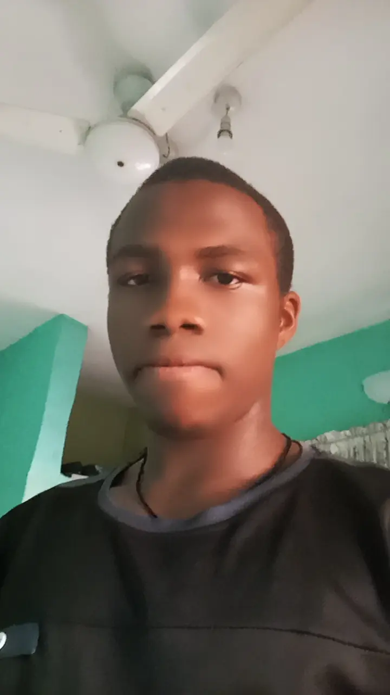

Christopher Chiedozie

Objective Statement
I want to become a proficient full-stack web developer by mastering HTML,CSS,Javascript,React,and Node.js.
By learning this language my goal is to build responsive,high-performing and dynamic web applications,continuously improving
my skill through real-world projects and staying updated with the latest industry trends.
Education Standard
- St. Dominic Savio Seminary School, Akpu.
- St. Johnbosco Seminary School, Awka
Work Experience
- Formator at Tansi International College (2024)
- Steward at St.Albert The Great Parish (2025)
Skills
- Graphics Designer
- Affiliate Marketer
- Content creator
Achievements
- Latin diploma Certificate
- WAEC Certificate
- NECO Certificate